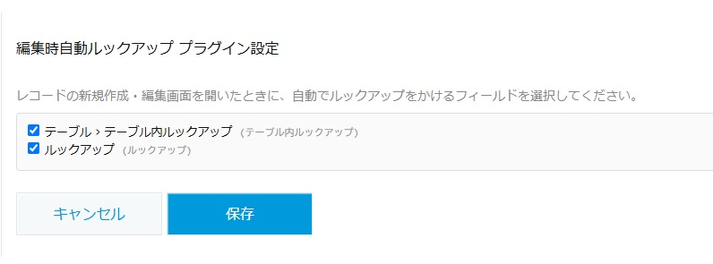
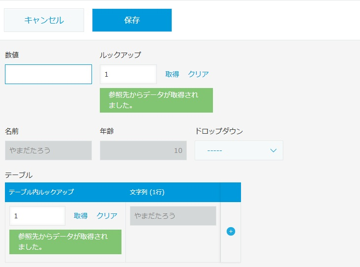

レコードの作成・編集画面を開くだけで、指定したルックアップフィールドを自動で取得します。手動クリックの手間とヒューマンエラーをまとめて解消するプラグインです。
新規作成・編集画面を開いた瞬間に、設定したルックアップフィールドが自動で値を取得します。ボタンのクリックは不要です。
プラグインの設定画面にアプリ内のルックアップフィールドが一覧表示されるので、自動化したいフィールドにチェックを入れるだけで設定できます。
テーブル内に配置されたルックアップフィールドも自動で検出し、自動実行の対象に含めることができます。

設定画面：自動化したいルックアップフィールドにチェックを入れるだけ

レコード編集画面を開くだけで、自動でルックアップが実行されます
| 対応プラン | スタンダードコース / ライトコース |
|---|---|
| 価格 | 無料 |
| 動作環境 | ルックアップフィールドを含むkintoneアプリ（PC・モバイル両対応） |